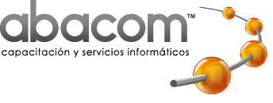

Resumen Ejecutivo:
El presente informe técnico analiza la propuesta de modernización curricular para el curso de Ethical Hacking desarrollado para ABACOM. El objetivo principal es formar "estrategas de IA" capaces de orquestar agentes autónomos y validar la resiliencia corporativa frente a adversarios que han reducido sus tiempos de intrusión a minutos o segundos.
La propuesta de modernización presenta una transformación integral del programa actual, incorporando ocho módulos especializados que abordan las técnicas más avanzadas de Offensive Security 2026: (1) Fundamentos y Reconocimiento Agéntico con OSINT y escaneo adaptativo, (2) Vulnerabilidades en IA y Modelos de Lenguaje incluyendo prompt injection y jailbreaking, (3) Explotación Web y APIs 2026 con lógica de negocio y GraphQL, (4) Hacking de Identidad y AD Moderno con Golden/Silver Ticket y elusión MFA, (5) Pentesting Autónomo y Red Teaming Agéntico mediante XBOW, (6) Evasión de Defensas con bypass EDR y Zig para payloads, (7) Ciberseguridad Industrial para entornos OT/IoT, SCADA, Modbus y MQTT, y (8) Post-Explotación, Reporte y Ética con enfoque en GDPR y DORA.
El panorama de amenazas 2026 se caracteriza por un breakout time promedio de 29 minutos, malware agéntico como PROMPTFLUX, y la transición de Zero Trust 1.0 a Zero Trust 2.0 (ZTNA vs VPN). El programa propuesto se estructura en 150 horas distribuidas en ocho módulos especializados, utilizando entornos Docker para replicar infraestructura, con VMware en Mac y VirtualBox para máquinas virtuales Linux/Windows.
Las certificaciones profesionales alineadas incluyen OSCP+, CEH v13 con IA, garantizando la empleabilidad de los egresados. La fundamentación científica del programa se basa en estándares OWASP Top 10 2025, MITRE ATT&CK v14, NIST SP 800-115 y frameworks PTES.
1. Introducción y Contexto
1.1 Fundamentación del Estudio
El Ethical Hacking ha evolucionado hacia una disciplina donde la inteligencia artificial agéntica juega un papel central. Los atacantes modernos han reducido dramáticamente sus tiempos de intrusión, con un breakout time promedio de apenas 29 minutos. Esta realidad demanda profesionales capaces de orquestar defensas autónomas y validar la resiliencia organizacional.
El surgimiento de malware agéntico como PROMPTFLUX representa una nueva generación de amenazas que pueden planificar, adaptar y ejecutar ataques de manera autónoma. Los profesionales de seguridad deben estar preparados para detectar, analizar y neutralizar estas amenazas.
1.2 Objetivos del Informe
- Formar estrategas de IA capaces de orquestar agentes autónomos de pentesting
- Dominio de evasión de EDRs modernas con técnicas avanzadas
- Gestión de IaC con Terraform, Ansible y Proxmox
- Hacking centrado en identidad con enfoque Zero Trust 2.0
- Ciberseguridad Industrial para entornos OT/IoT, SCADA
2. Análisis del Temario Actual (ABACOM)
2.1 Estructura Curricular Existente
| Unidad | Contenido Principal | Estado |
|---|
| I | Introducción al Ethical Hacking y VirtualBox | Reemplazar |
| II | Configuración del Laboratorio (Kali Linux) | Actualizar |
| III | Introducción a Kali Linux y comandos | Expandir |
| IV | Fases del Ethical Hacking tradicionales | Reemplazar |
| V | Hacking en Acción (Hack The Box) | Expandir |
2.2 Limitaciones Identificadas
- Sin IA Agéntica: No aborda orquestación de agentes autónomos
- Sin Prompt Security: No incluye prompt injection ni jailbreaking
- Sin Evasión avanzada: No cubre bypass de EDR modernos
- Sin ciberseguridad industrial: No aborda OT/IoT, SCADA, Modbus
- Sin Zero Trust 2.0: Paradigma tradicional de perímetro
- Sin gestión IaC: No incluye Terraform, Ansible
- Sin XBOW: No aborda pentesting autónomo
3. Diagnóstico del Panorama de Offensive Security 2026
3.1 Métricas Críticas
| Indicador | Valor | Fuente |
|---|
| Breakout time promedio | 29 minutos | Mandiant, 2026 |
| Crecimiento malware agéntico | +400% | Check Point, 2026 |
| Ataques a identidad | 90% | Verizon DBIR 2026 |
| Organizaciones con Zero Trust | 75% | Gartner, 2026 |
| Vulnerabilidades en APIs | +40% | OWASP 2025 |
3.2 Nuevas Amenazas
- PROMPTFLUX: Malware agéntico con capacidades autónomas de planificación
- Zero Trust 2.0: ZTNA reemplazando VPNs tradicionales
- IA-Powered Attacks: Ataques potenciados por modelos de lenguaje
- Supply Chain: Explotación de dependencias y herramientas de desarrollo
- OT/ICS Attacks: Incremento de ataques a infraestructura crítica
4. Propuesta de Modernización Curricular
4.0 Los 8 Pilares del Programa
La modernización curricular se fundamenta en ocho módulos que forman estrategas de IA en ciberseguridad ofensiva:
| Módulo | Tema | Horas |
|---|
| 1 | Fundamentos y Reconocimiento Agéntico (OSINT, escaneo adaptativo) | 15 |
| 2 | Vulnerabilidades en IA y Modelos de Lenguaje (prompt injection, jailbreaking) | 20 |
| 3 | Explotación Web y APIs 2026 (lógica de negocio, GraphQL) | 20 |
| 4 | Hacking de Identidad y AD Moderno (Golden/Silver Ticket, elusión MFA) | 20 |
| 5 | Pentesting Autónomo y Red Teaming Agéntico (XBOW) | 20 |
| 6 | Evasión de Defensas (bypass EDR, Zig para payloads) | 20 |
| 7 | Ciberseguridad Industrial (OT/IoT, SCADA, Modbus, MQTT) | 20 |
| 8 | Post-Explotación, Reporte y Ética (GDPR, DORA) | 15 |
| Total | | 150 |
4.1 Detalle de Módulos
Módulo 1: Fundamentos y Reconocimiento Agéntico
- OSINT avanzada con herramientas de IA
- Reconocimiento pasivo y activo automatizado
- Escaneo adaptativo con Nmap + IA
- Enumeración de servicios y vulnerabilidades
- Setup de laboratorio con Docker
Módulo 2: Vulnerabilidades en IA y Modelos de Lenguaje
- Prompt Injection y Jailbreaking
- Técnicas de Jailbreak para Bug Bounty: DAN, RUIN, Master-of-Prompt
- Ataques a APIs de LLMs
- Token smuggling y context overflow
- Evaluación de seguridad de LLMs
- Defensa contra Prompt Attacks
- Bug Bounty en plataformas de IA: OpenAI, Anthropic, Google
Módulo 3: Explotación Web y APIs 2026
- OWASP Top 10 2025
- GraphQL Security Testing
- Business Logic Vulnerabilities
- Server-Side Request Forgery (SSRF)
- API REST Security con OWASP ZAP
Módulo 4: Hacking de Identidad y AD Moderno
- Active Directory Attacks
- Golden Ticket y Silver Ticket
- Kerberoasting y AS-REP Roasting
- Elusión de MFA y Pass-the-Cookie
- Zero Trust 2.0: ZTNA vs VPN
Módulo 5: Pentesting Autónomo y Red Teaming Agéntico
- XBOW: Cross Site OWASP Scanning
- Orquestación de agentes de pentesting
- Automatización de reconocimiento
- Red Team Operations
- C2 frameworks: Sliver, Mythic
Módulo 6: Evasión de Defensas
- Bypass de EDRs modernas
- Technique for Evading Trend Micro (Tricks)
- Zig: Modern payload generation
- Living Off the Land (LOLBAS)
- Process injection techniques
Módulo 7: Ciberseguridad Industrial
- Arquitectura OT/ICS
- Protocolos Industriales: Modbus, OPC-UA, MQTT
- SCADA Security Assessment
- IoT Vulnerabilities
- Hardening de Sistemas Industriales con OpenClaw
- Pentesting Automatizado con Pentagi
- Herramientas: PLCSploit, s7scan, OpenClaw, Pentagi
Módulo 8: Post-Explotación, Reporte y Ética
- Post-explotación y pivoting
- Persistencia y covert channels
- Reporting profesional
- Marco legal: GDPR, DORA
- Código de ética del hacker ético
5. Habilidades Clave del Programa
- Orquestación de IA Agéntica: Capacidad de gestionar agentes autonomous de pentesting
- Evasion de EDRs modernas: Técnicas avanzadas de bypass
- Gestión de IaC: Terraform, Ansible, Proxmox
- Hacking centrado en identidad: Zero Trust 2.0
- CTF & Bug Bounty con IA: TryHackMe (Free), Hack The Box (Free), OverTheWire
6. Metodología de Evaluación
| Componente | Peso | Descripción |
|---|
| Laboratorios Prácticos | 45% | Ejercicios en entornos Docker |
| Proyectos de Pentesting | 30% | Evaluaciones completas |
| CTF Competitions | 15% | Desafíos de plataformas de práctica |
| Evaluación Teórica | 10% | Conceptos y metodologías |
7. Certificaciones Alineadas
- OSCP+ - Offensive Security Certified Professional
- CEH v13 con IA - Certified Ethical Hacker con IA
- eJPTv2 - eLearnSecurity Junior Penetration Tester
- PNPT - Practical Network Penetration Tester
- CRTP - Certified Red Team Professional
8. Infraestructura de Laboratorios
8.1 Introducción a Docker
Docker es una plataforma de contenedorización que permite crear, desplegar y ejecutar aplicaciones en entornos aislados llamados contenedores. Cada contenedor incluye todo lo necesario para ejecutar el software: código, runtime, herramientas del sistema, librerías y configuraciones. Para el curso de Ethical Hacking, Docker permite:
- Entornos reproducibles: Los laboratorios pueden replicarse fácilmente en cualquier máquina
- Aislamiento seguro: Los ataques realizados en contenedores no afectan al sistema host
- Economía de recursos: Un solo equipo puede ejecutar múltiples laboratorios simultáneamente
- Despliegue rápido: Los contenedores se inicializan en segundos vs. minutos de VMs
8.2 Introducción a Kali Linux
Kali Linux es la distribución de seguridad más utilizada, basada en Debian y mantenida por Offensive Security. Incluye más de 600 herramientas preinstaladas para penetration testing y security auditing:
- Metasploit Framework: Plataforma de explotación de vulnerabilidades
- Nmap: Escaneo de puertos y red
- Wireshark: Analizador de protocolos de red
- John the Ripper: Crackeo de contraseñas
- SQLMap: Inyección SQL automática
- Burp Suite: Seguridad de aplicaciones web
- Hashcat: Recuperación de contraseñas de alta velocidad
El curso comienza con un módulo de introducción a Kali Linux donde los estudiantes aprenden la navegación básica, uso de terminal, gestión de paquetes y configuración del entorno de trabajo.
8.3 Laboratorios del Curso
La infraestructura utiliza contenedores Docker para todos los laboratorios, con posibilidad de VMs mediante VMware Fusion (Mac) y VirtualBox:
- Docker & Docker Compose - Entornos ligeros y reproducibles
- Kali Linux - Imagen base con herramientas de seguridad
- Metasploitable 3 - Servidores vulnerables para práctica
- DVWA, WebGoat - Aplicaciones web vulnerables
- AD Lab - Active Directory vulnerable para ataques de identidad
- ICS/SCADA Lab - Simulación de entorno industrial OT
- VMware Fusion - Máquinas virtuales en Mac
- VirtualBox - Opción de virtualización
9. Bibliografía
- The Penetration Testing Execution Standard (PTES), Penetration Testing Execution Standard. [Online]. Available: http://www.pentest-standard.org/. [Accessed: Feb. 27, 2026].
- OWASP Foundation, OWASP Web Security Testing Guide v5. [Online]. Available: https://owasp.org/www-project-web-security-testing-guide/. [Accessed: Feb. 27, 2026].
- MITRE Corporation, MITRE ATT&CK Framework v14. [Online]. Available: https://attack.mitre.org/. [Accessed: Feb. 27, 2026].
- NIST, SP 800-115: Technical Guide to Information Security Testing and Assessment. Gaithersburg, MD: National Institute of Standards and Technology, 2025. [Online]. Available: https://csrc.nist.gov/publications/detail/sp/800-115/final.
- OWASP, OWASP Top 10 2025. [Online]. Available: https://owasp.org/www-project-top-ten/. [Accessed: Feb. 27, 2026].
- Verizon, Data Breach Investigations Report 2026. [Online]. Available: https://www.verizon.com/business/resources/reports/dbir/.
- Mandiant, M-Trends 2026 Report. [Online]. Available: https://www.mandiant.com/resources/m-trends.
- Hack The Box, Hack The Box Academy. [Online]. Available: https://academy.hackthebox.com/. [Accessed: Feb. 27, 2026].
- TryHackMe, TryHackMe Learning Paths (Plan Free). [Online]. Available: https://tryhackme.com/. [Accessed: Feb. 27, 2026].
- OverTheWire, OverTheWire Wargames. [Online]. Available: https://overthewire.org/wargames/. [Accessed: Feb. 27, 2026].
Anexo A: Herramientas del Laboratorio (Open Source)
| Categoría | Herramientas |
|---|
| Reconnaissance | Nmap, Amass, Subfinder, theHarvester |
| IA Security | AI-Lint, ProtectAI, Garak |
| Web Testing | OWASP ZAP, SQLMap, Dirbuster, Gobuster |
| Exploitation | Metasploit Framework, Sliver, PayloadsAllTheThings |
| Password Cracking | Hashcat, John the Ripper, Hydra, Medusa |
| EDR Evasion | Darkarmour, EDRSandblast, Villain |
| ICS/OT | PLCSploit, s7scan, modscan, opcua-exploit |
| Virtualización | VirtualBox, Docker Desktop, VMware Fusion |
| CTF & Labs | KodeKloud, Hack The Box, TryHackMe, PentesterLab |